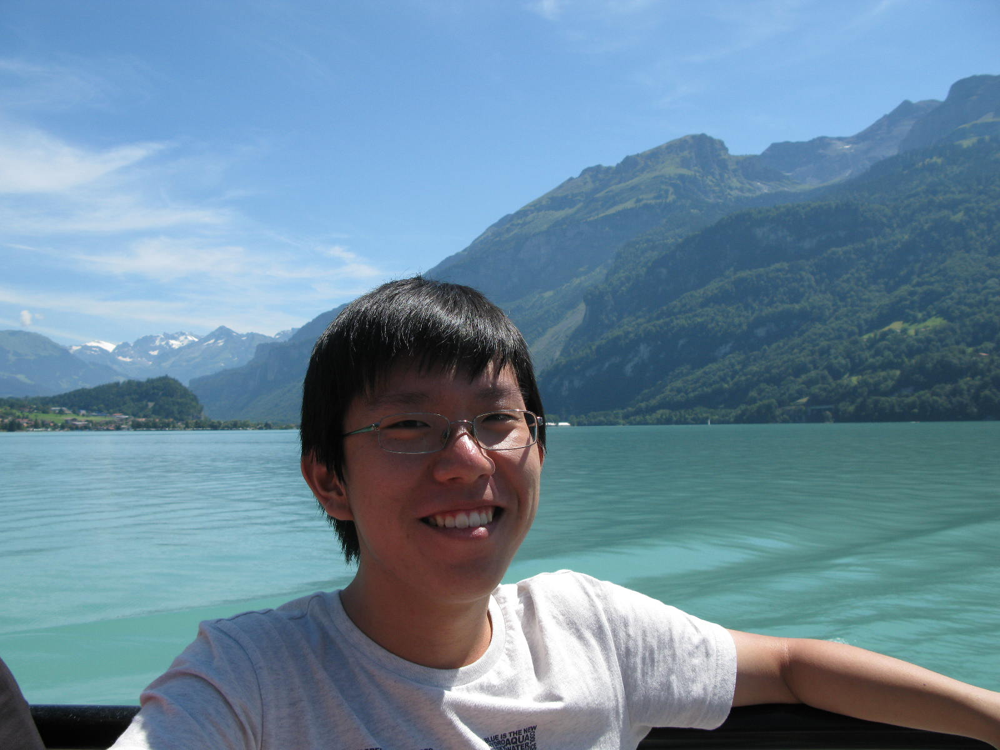

|
 |
Short Summary about Myself
I am currently a Senior Engineering Manager at Cisco Meraki. I received a Ph.D. degree majoring in networked computing systems from KAIST in 2018 under Prof. KyoungSoo Park. Previously, I received a Master's degree in Electrical Engineering and Information Security from KAIST in 2013, and a Bachelor's degree in Electrical Engineering from KAIST in 2011.
Professional Experience
|
Senior Engineering Manager @ Cisco Meraki - MX SDWAN & Security Appliance - MX Services Org (SDWAN, Service Provider, Security, Backend, Fast (Performance)) Engineering Manager @ Cisco Meraki - MX SDWAN & Security Appliance - Routing, VPN Senior Software Engineer @ Cisco Meraki - MX SDWAN & Security Appliance - Routing Research Intern @ Samsung Research America - DataHawk: Time-series Data Platform for IoT Summer Research Assistant @ NEC Laboratories America Inc. - Simba: Cloud Infastructure for Mobile Clients |
2022. 02. ~ Present 2020. 10. ~ 2022. 02. 2017. 12. ~ 2020. 10. 2015. 06. 16. ~ 2015. 09. 24. 2013. 06. 20. ~ 2013. 09. 27. |
Past Research Projects
APUNet: High-performance APU-based network packet processor [NSDI'17]
Simba [Code]: A reliable, consistent, and efficient data sync platform for mobile apps (work done as a research intern at NEC Labs. America) [FAST'15, EuroSys'15]
Abacus: An accurate cellular data traffic accounting system at high-speed networks [NDSS'14]
Cedos [Code]: A delay- and disruption-tolerant cellular data offloading system [MobiSys'15, ToN'17]
SPEX: A framework for system performance exploration and analysis (work done as a research intern at Samsung Research America) [EWiLi'16]
SIoT: Secure network platform for IoT devices via access-controlled gateway
GPU-SE: GPU-based parallel symbolic execution system for high-speed malware detection
HumanSign: A human-attestable Internet message composition framework
Conferences
APUNet: Revitalizing GPU as Packet Processing Accelerator [PPTX] [VIDEO]
Younghwan Go, Muhammad Jamshed, YoungGyoun Moon, Changho Hwang, and KyoungSoo Park
In Proceedings of the 14th USENIX Symposium on Networked Systems Design and Implementation (NSDI 2017)
Boston, MA, USA, March 2017 (Acceptance Rate: 18.2%)
Practicalizing Delay-Tolerant Mobile Apps with Cedos [PPTX] [PROJECT PAGE] [GITHUB]
YoungGyoun Moon, Donghwi Kim, Younghwan Go, Yeongjin Kim, Yung Yi, Song Chong, and KyoungSoo Park
In Proceedings of the 13th International Conference on Mobile Systems, Applications and Services (MobiSys 2015)
Florence, Italy, May 2015 (Acceptance Rate: 13.2%)
Simba: Tunable End-to-End Data Consistency for Mobile Apps [PPTX] [PROJECT PAGE] [GITHUB]
Dorian Perkins, Nitin Agrawal, Akshat Aranya, Curtis Yu, Younghwan Go, Harsha Madhyastha, and Cristian Ungureanu
In Proceedings of the European Conference on Computer Systems (EuroSys 2015)
Bordeaux, France, April 2015 (Acceptance Rate: 21.3%)
Reliable, Consistent, and Efficient Data Sync for Mobile Apps [PPTX] [VIDEO] [PROJECT PAGE] [GITHUB]
Younghwan Go, Nitin Agrawal, Akshat Aranya, and Cristian Ungureanu
In Proceedings of the 13th USENIX Conference on File and Storage Technologies (FAST 2015)
Santa Clara, CA, USA, February 2015 (Acceptance Rate: 21.5%)
Gaining Control of Cellular Traffic Accounting by Spurious TCP Retransmission [PPTX] [PROJECT PAGE]
Younghwan Go, Jongil Won, Denis Foo Kune, EunYoung Jeong, Yongdae Kim, and KyoungSoo Park
In Proceedings of the 21st Annual Network and Distributed System Security Symposium (NDSS 2014)
San Diego, CA, USA, February 2014 (Acceptance Rate: 18.6%)
Journals
Cedos: A Network Architecture and Programming Abstraction for Delay-Tolerant Mobile Apps [PROJECT PAGE] [GITHUB]
YoungGyoun Moon, Donghwi Kim, Younghwan Go, Yeongjin Kim, Yung Yi, Song Chong, and KyoungSoo Park
In IEEE/ACM Transactions on Networking (ToN) - international
Volume 25(2), pp. 646-661, April 2017
Deploying a Practical Mobile CDN System with Delay-Tolerant Data Offloading
Younghwan Go, YoungGyoun Moon, and KyoungSoo Park
Telecommunications Review (TR 2012) - domestic
22(5), pp. 667-677, October 2012
Workshops & Posters
Enabling Performance Exploration and Analysis for Multi-parametric Systems [PPTX]
Younghwan Go, and Juan A. Colmenares
In Proceedings of the Embedded Operating Systems Workshop (EWiLi 2016)
Pittsburgh, PA, USA, October 2016
Cedos: a Practical Cellular Data Offloading System for Mobile Users
YoungGyoun Moon, Donghwi Kim, Younghwan Go, Yung Yi, Song Chong, and KyoungSoo Park
In Proceedings of the USENIX Annual Technical Conference (ATC 2014) - poster
Philadelphia, PA, USA, June 2014
Impact of Malicious TCP Retransmission on Cellular Traffic Accounting [PPTX]
Younghwan Go, Denis Foo Kune, Shinae Woo, KyoungSoo Park, and Yongdae Kim
In Proceedings of the 5th Annual Wireless of the Students, by the Students, for the Students Workshop (ACM S3 2013)
Miami, FL, USA, September 2013 - awarded BEST PAPER
Towards Accurate Accounting of Cellular Data for TCP Retransmission [PPTX]
Younghwan Go, Denis Foo Kune, Shinae Woo, KyoungSoo Park, and Yongdae Kim
In Proceedings of the 14th International Workshop on Mobile Computing Systems and Applications (ACM HotMobile 2013)
Jekyll Island, GA, USA, February 2013 (Acceptance Rate: 31%)
Enabling DTN-based Data Offloading in Urban Mobile Network Environments
Younghwan Go, YoungGyoun Moon, and KyoungSoo Park
In Proceedings of the 7th International Conference on Future Internet Technologies (ACM CFI 2012) - poster
Seoul, South Korea, September 2012 (Acceptance Rate: 19%)
A Disruption-tolerant Transmission Protocol for Practical Mobile Data Offloading [PPTX]
Younghwan Go, YoungGyoun Moon, Giyoung Nam, and KyoungSoo Park
In Proceedings of the 3rd International Workshop on Mobile Opportunistic Networks (ACM MobiOpp 2012)
Zurich, Switzerland, March 2012 (Acceptance Rate: 33%)
Suppressing Malicious Bot Traffic Using an Accurate Human Attester
Muhammad Jamshed, Younghwan Go, and KyoungSoo Park
In Proceedings of the 8th USENIX Symposium on Networked Systems Design and Implementation (NSDI 2011) - poster
Boston, MA, USA, March 2011
Invited Talks
|
A3 Foresight Program: Workshop on Next Generation Networks and Network Security - Gyeongju, Korea Columbia University - CS Conference room 452 Princeton University - Computer Science 402 |
2014. 07. 14. 2013. 09. 25. 2013. 09. 19. |
|
A3 Foresight Program: Workshop on Next Generation Networks and Network Security - Shanghai, China | 2012. 06. 29. |
Awards and Honors
|
KAIST Annual Honor Roll Award 2015 KAIST Breakthroughs of the Year 2015, Spring (Abacus) KAIST Annual Honor Roll Award 2014 KAIST EE Research Achievement of the Year 2014 (Abacus) Microsoft Research Asia Fellowship 2013 - Nomination Award Winner Best paper award for ACM S3 2013 |
2016. 01. 2015. 03. 2015. 01. 2014. 12. 2013. 11. 2013. 09. |
Teaching Experience
Teaching Assistant
EE205: Data Structures and Algorithms for Electrical Enginnering (2015 Fall)
EE209: Programing Structures for Electrical Enginnering (2012 Fall, 2016 Spring/Fall)
EE323: Computer Networks (2015 Spring)
EE505: Electronics Design Lab. (2013 Spring, 2014 Spring/Fall)
EE515: Theory of Hacking (2013 Fall)